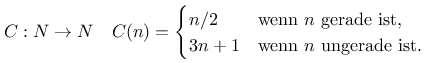
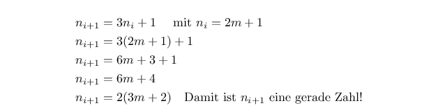
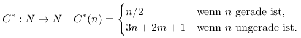
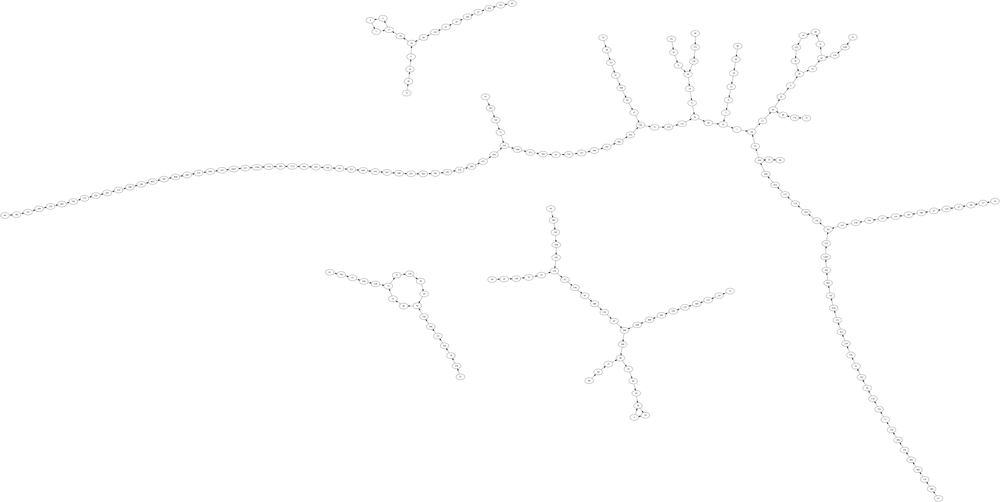

Erweiterte Collatz-Vermutung (?)
Ich bin beim Surfen im Internet über verschiedenste Videos zum Thema der Collatz-Vermutung gestoßen - ich habe auch bereits den einen oder anderen Artikel zu diesem Thema gelesen. Neulich hatte ich aber eine Idee, die ich unbedingt ausprobieren wollte, weil ich davon - oder von etwas ähnlichem - bisher weder gehört noch gelesen habe
Es geht bei der Vermutung darum, dass die Abbildung der natürlichen Zahlen auf sich selbst nach folgender Vorschrift

einen zusammenhängenden Graphen mit einem Zyklus 1, 4, 2 ergibt. Das bedeutet anders gesagt, dass egal welchen Startwert man nimmt nach endlich vielen Iterationen die Zahl 1 ereicht wird. Diese Vermutung, die Collatz wohl 1950 mündlich verbreitete und die bis heute weder bewiesen, noch widerlegt wurde finde ich wie viele andere Probleme der Zahlentheorie besonders deswegen interessant, da man sie extrem einfach formulieren kann - dennoch ist sie offenbar für die Mathematiker eine extrem harte Nuss.
Ich möchte hier einschieben, dass ich nicht der Meinung bin, dass ich sie aufgelöst hätte, oder dass ich auch nur einen besonders interessanten Aspekt hinzugefügt habe. Die Tatsache, dass ich bisher keine Erwähnung meiner Idee gefunden habe, kann verschiedene Ursachen haben - ohne Anspruch auf Vollständigkeit wären da etwa:
- Ich habe einfach nicht die richtige Quelle gefunden
- Meine Idee ist aus mathematischer Sicht auf das Problem so trivial, dass sich eine Untersuchung nicht lohnt
- ...
- Es ist wirklich noch niemand auf diese Idee gekommen
Ich halte die vierte Möglichkeit für mit Abstand am unwahrscheinlichsten - dennoch...:
Die Berechnungsvorschrift im Fall, dass n ungerade ist garantiert, dass im nächsten Schritt n wieder gerade ist:

Meine Idee war nun, die Berechnungsvorschrift für den nächsten Wert von n falls n ungerade ist durch einen parametrisierbaren Summenterm zu ergänzen, der bei m=0 wieder die der urprünglichen Collatz-Vermutung ergibt:

Dazu schrieb ich ein kleines Programm, mit dem man die ersten p Zahlen daraufhin untersuchen kann, ob es darin mehrere Zyklen gibt - denn das würde ja für einen spezifischen Parameter m die Vermutung wiederlegen wie man sich leicht überlegen kann, wenn man die Vorschrift als gerichteten Graphen versteht...
Ich berechnete das Mapping zunächst für die Werte von 1 bis 4 für m. Ich hatte dabei keine Illusionen, dass sich irgendetwas überraschendes ergeben würde. Interessanterweise wurde ich aber doch überrascht: Es stellte sich heraus, dass bereits in meinem doch sehr eingeschränkten Suchraum bei m=2 die Vermutung, dass es sich um einen zusammenhängenden Graphen handelt gleich mehrfach widerlegt werden konnte: die untenstehende Graphik zeigt augenscheinliche 4 Kreise. Ein gerichteter zusammenhängender Graph lässt sich aus unzusammenhängenden Teilgraphen nur dann konstruieren, wenn man eine Kante hinzufügen kann, die aus einem der Knoten in Teilgraph A kommend diesen mit einem Knoten im Teilgraphen B verbindet. Da es sich hierbei jedoch um eine eindeutige Abbildung handelt, kann aus einem Knoten immer nur maximal eine Kante entspringen und in einem Teilgraphen mit einem Kreis entspringt bereits aus jedem Knoten eine Kante.

Graph für das Ergebnis der Erweiterung der Collatz-Abbildung mit Parameterwert m=2Daraufhin weitete ich meine Suche aus und prüfte die werte von m im Bereich von 1 bis 19. Dabei prüfte ich die Zahlen von 4 bis 10000000 mit jeweils maximal 10000 Iterationen. Die Parameterwerte für m mit der Anzahl der gefundenen Zyklen sind in der nachfolgenden Tabelle aufgeführt, wobei diejenigen, für die ich bisher nur einen Zyklus gefunden habe und die daher Kandidaten für eine erweiterte Collatz-Vermutung sein könnten hervorgehoben habe:
| m | Gefundene Zyklen |
|---|---|
| 0 | 1 |
| 1 | 1 |
| 2 | 6 |
| 3 | 2 |
| 4 | 1 |
| 5 | 3 |
| 6 | 10 |
| 7 | 6 |
| 8 | 3 |
| 9 | 2 |
| 10 | 2 |
| 11 | 4 |
| 12 | 8 |
| 13 | 1 |
| 14 | 5 |
| 15 | 2 |
| 16 | 3 |
| 17 | 9 |
| 18 | 4 |
| 19 | 10 |
Darüber hinaus ist vielleicht die Tatsache noch interessant, dass es so zu sein scheint, dass für jeden Parameter m ein Zyklus aus genau drei Knoten auftaucht, dessen Mitglieder sich auf einfache Art berechnen lassen:
Der Code des Java-Programms, mit dem ich die Prüfungen vollzogen habe ist hier unten eingefügt:
/*
* Copyright (c) 2021.
*
* Juergen Key. Alle Rechte vorbehalten.
*
* Weiterverbreitung und Verwendung in nichtkompilierter oder kompilierter Form,
* mit oder ohne Veraenderung, sind unter den folgenden Bedingungen zulaessig:
*
* 1. Weiterverbreitete nichtkompilierte Exemplare muessen das obige Copyright,
* die Liste der Bedingungen und den folgenden Haftungsausschluss im Quelltext
* enthalten.
* 2. Weiterverbreitete kompilierte Exemplare muessen das obige Copyright,
* die Liste der Bedingungen und den folgenden Haftungsausschluss in der
* Dokumentation und/oder anderen Materialien, die mit dem Exemplar verbreitet
* werden, enthalten.
* 3. Weder der Name des Autors noch die Namen der Beitragsleistenden
* duerfen zum Kennzeichnen oder Bewerben von Produkten, die von dieser Software
* abgeleitet wurden, ohne spezielle vorherige schriftliche Genehmigung verwendet
* werden.
*
* DIESE SOFTWARE WIRD VOM AUTOR UND DEN BEITRAGSLEISTENDEN OHNE
* JEGLICHE SPEZIELLE ODER IMPLIZIERTE GARANTIEN ZUR VERFUEGUNG GESTELLT, DIE
* UNTER ANDEREM EINSCHLIESSEN: DIE IMPLIZIERTE GARANTIE DER VERWENDBARKEIT DER
* SOFTWARE FUER EINEN BESTIMMTEN ZWECK. AUF KEINEN FALL IST DER AUTOR
* ODER DIE BEITRAGSLEISTENDEN FUER IRGENDWELCHE DIREKTEN, INDIREKTEN,
* ZUFAELLIGEN, SPEZIELLEN, BEISPIELHAFTEN ODER FOLGENDEN SCHAEDEN (UNTER ANDEREM
* VERSCHAFFEN VON ERSATZGUETERN ODER -DIENSTLEISTUNGEN; EINSCHRAENKUNG DER
* NUTZUNGSFAEHIGKEIT; VERLUST VON NUTZUNGSFAEHIGKEIT; DATEN; PROFIT ODER
* GESCHAEFTSUNTERBRECHUNG), WIE AUCH IMMER VERURSACHT UND UNTER WELCHER
* VERPFLICHTUNG AUCH IMMER, OB IN VERTRAG, STRIKTER VERPFLICHTUNG ODER
* UNERLAUBTE HANDLUNG (INKLUSIVE FAHRLAESSIGKEIT) VERANTWORTLICH, AUF WELCHEM
* WEG SIE AUCH IMMER DURCH DIE BENUTZUNG DIESER SOFTWARE ENTSTANDEN SIND, SOGAR,
* WENN SIE AUF DIE MOEGLICHKEIT EINES SOLCHEN SCHADENS HINGEWIESEN WORDEN SIND.
*
*/
package de.elbosso.scratch.algorithms.graph;
import java.io.FileNotFoundException;
/**
* This class can be used to look for cycles in the graph obtained by iterating the (extended) collatz map.
* The original collatz map is
* <pre>
* C(n)=n/2 if n is even
* C(n)=3n+1 if n is odd
* </pre>
* The variant here takes on a parameter m so that
* <pre>
* C(n)=n/2 if n is even
* C(n)=3n+2m+1 if n is odd
* </pre>
* Note that the computation uses Javas type long - this has to be kept in mind when determining the parameters...
* If the algorithm seems to find cycles with negative numbers in it, the parameter was choosen so that there happened
* an overflow!
*/
public class Collatz
{
private final long m;
private final long startingNumber;
private final long endingNumber;
private final long maxIterations;
private final boolean findAll;
/**
* Tries to find the number of cycles when computing the map for the Collatz conjecture
* @param m parameter for computing the map
* @param startingNumber the search for cycles in the graph is started at this number
* @param endingNumber the search for cycles in the map stops before this number. Be aware that this number is small enough
* so that at least 3n+2m+1 fits into Javas type long!
* If the algorithm seems to find cycles with negative numbers in it,
* the parameter was choosen so that there happened an overflow!
* @param maxIterations for each number betwenn startingNumber (inclusive) and
* endingNumber(exclusive) maximal this number of iterations of the map
* are computed looking for cycles
* @param findAll if false, the search is stopped after finding a second cycle
*/
public Collatz(long m, long startingNumber, long endingNumber, long maxIterations,boolean findAll)
{
this.m = m;
this.startingNumber = startingNumber;
this.endingNumber = endingNumber;
this.maxIterations = maxIterations;
this.findAll=findAll;
}
public static void main(java.lang.String[] args)throws FileNotFoundException
{
long startingNumber=4;
long endingNumber=10000000l;
long maxIterations=10000;
boolean findAll=true;
boolean digDeeper=false;
long digDeeperFactorEndingNumber=10;
long digDeeperFactorMaxIterations=10;
for(long m=0;m<20;++m)
{
System.out.print("m= "+m+" Suspicion is: ["+((2*m+1))+", "+((2*m+1)*2)+", "+((2*m+1)*4)+"] - cyclecount: ");
long cyclecount=new Collatz(m,startingNumber,endingNumber,maxIterations,findAll).run();
System.out.println(cyclecount);
if((digDeeper)&&((m>0)&&(cyclecount<2)))
{
System.out.println("Digging deeper at m= "+m);
cyclecount = new Collatz(m, startingNumber,endingNumber*digDeeperFactorEndingNumber,maxIterations*digDeeperFactorMaxIterations,findAll).run();
}
}
}
public long run() throws FileNotFoundException
{
java.util.Set<java.lang.Long> alreadySeen=new java.util.HashSet();
java.io.PrintWriter pw=new java.io.PrintWriter("/tmp/graph"+m+".gv");
java.io.PrintWriter pw1=new java.io.PrintWriter("/tmp/lengths"+m+".dat");
pw.println("digraph G {\nlayout=neato");
long cyclecount=0;
long maxIter=0;
long i=startingNumber%2==0?startingNumber-1:startingNumber;
if(i<0)
i=1;
for(;i<endingNumber;i+=2)
{
java.util.Set<java.lang.Long> alreadySeenThisRun=new java.util.HashSet();
java.lang.Long currentValue=java.lang.Long.valueOf(i);
if(alreadySeen.contains(currentValue)==false)
{
alreadySeen.add(currentValue);
alreadySeenThisRun.add(currentValue);
long j=0;
for(;j<maxIterations;++j)
{
pw.print(currentValue);
pw.print(" -> ");
currentValue=collatz(currentValue);
pw.println(currentValue);
if(alreadySeen.contains(currentValue)==false)
{
alreadySeen.add(currentValue);
alreadySeenThisRun.add(currentValue);
}
else
{
if(alreadySeenThisRun.contains(currentValue)==true)
{
System.out.println("new cycle found at " + currentValue+": "+alreadySeenThisRun);
++cyclecount;
}
if(j>maxIter)
maxIter=j;
break;
}
}
pw1.println(i+"\t"+j);
}
if((findAll==false)&&(cyclecount>1))
break;
}
pw.println("}");
pw1.close();
pw.close();
System.out.println("Maximum iterations needed to find a cycle: "+maxIter);
return cyclecount;
}
private Long collatz(Long currentValue)
{
long n=currentValue.longValue();
return java.lang.Long.valueOf(n%2==0?n/2:3*n+2*m+1);
}
}
Artikel, die hierher verlinken
Collatz-Vermutung II
29.09.2021
Nachdem ich kürzlich bereits über meinen Zeitvertreib mit der Collatz-Vermutung berichtet habe folgen hier nun einige Details meiner Implementierung


Vor 5 Jahren hier im Blog
-
LXC bootstrap für GUI Container
02.07.2019
Nachdem ich bereits öfter über LXC und xpra berichtet habe möchte ich hier nun ein Skript vorstellen, mit dem man sehr schnell zu einem Container kommen kann, in dem man graphische Anwendungen betreiben kann, von denen man den Eindruck hat, dass sie in einer Sandbox besser aufgehoben wären.
Weiterlesen...
Tags
Android Basteln C und C++ Chaos Datenbanken Docker dWb+ ESP Wifi Garten Geo Git(lab|hub) Go GUI Gui Hardware Java Jupyter Komponenten Links Linux Markdown Markup Music Numerik PKI-X.509-CA Python QBrowser Rants Raspi Revisited Security Software-Test sQLshell TeleGrafana Verschiedenes Video Virtualisierung Windows Upcoming...
Neueste Artikel
- SQL-Aggregatfunktionen in SQLite als BeanShell-Scripts
Ich habe neulich über eine Möglichkeit berichtet, SQLite mittels der sQLshell und Beanshell-Skripten um SQL-Funktionen zu erweitern. In diesem Artikel versprach ich auch, über eine solche Möglichkeit für Aggregatfunktionen zu berichten.
Weiterlesen... - LinkCollections 2024 V
Nach der letzten losen Zusammenstellung (für mich) interessanter Links aus den Tiefen des Internet von 2024 folgt hier gleich die nächste:
Weiterlesen... - SQL Funktionen in SQLite als BeanShell-Scripts
Ich habe bereits hin und wieder über Erweiterungen der sQLshell berichtet, die bestimmte spezifische, proprietäre Features des jeweiligen DBMS in der sQLshell verfügbar machen.
Weiterlesen...
Manche nennen es Blog, manche Web-Seite - ich schreibe hier hin und wieder über meine Erlebnisse, Rückschläge und Erleuchtungen bei meinen Hobbies.
Wer daran teilhaben und eventuell sogar davon profitieren möchte, muß damit leben, daß ich hin und wieder kleine Ausflüge in Bereiche mache, die nichts mit IT, Administration oder Softwareentwicklung zu tun haben.
Ich wünsche allen Lesern viel Spaß und hin und wieder einen kleinen AHA!-Effekt...
PS: Meine öffentlichen GitHub-Repositories findet man hier - meine öffentlichen GitLab-Repositories finden sich dagegen hier.